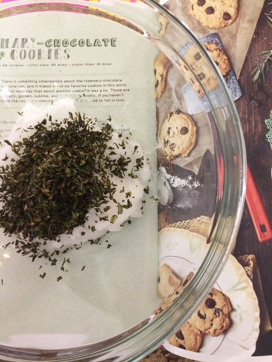

Rosemary Chocolate Chip Cookies

Image and recipe from Farm Blog, but this recipe is by Isa Chandra Moscowitz—check out the official video here.
Description
Rosemary and chocolate chips, together at last!
Ingredients
- 1/2 cup refined coconut oil, softened
- 2 tablespoons lightly packed, chopped fresh rosemary
- 1/4 cup granulated sugar
- 1/3 cup light brown sugar
- 1/4 cup almond milk (or your favorite non-dairy milk)
- 1 tablespoon ground flax seeds (golden preferred)
- 2 teaspoons pure vanilla extract
- 1 1/3 cups all-purpose flour
- 1/2 teaspoon salt
- 1/2 teaspoon baking soda
- 1/2 cup chocolate semisweet chips
Steps
- Preheat oven to 350 F. Lightly grease baking sheet.
- Use a fork to beat together the coconut oil and rosemary until smooth.
- dd the sugar and beat for a minute.
- Add the non-dairy milk and flax seeds and beat for 30 seconds.
- Mix in the vanilla.
- Add about half the flour, as well as the salt and baking soda, and mix well.
- Add the remainder of the flour, along with the chocolate chips, and mix well.
- Scoop about 2 tablespoons of rounded dough onto cookie sheets. Flatten gently with hands.
- Bake for 10 to 12 minutes, until bottoms are golden brown.
- Let cool on sheets for 3 minutes or so, then transfer to cooling racks.
Back to Homepage